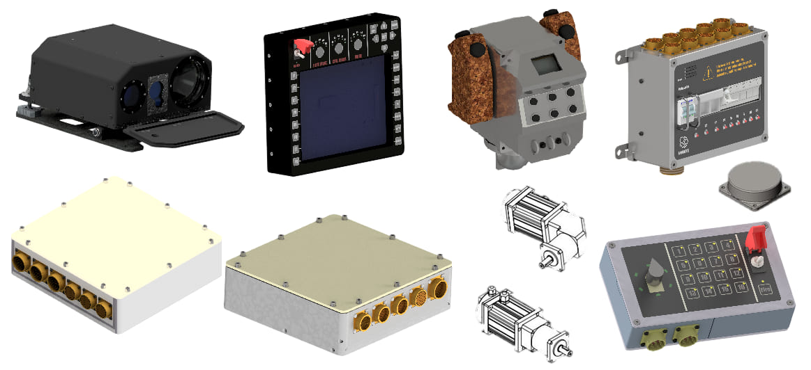

Система управления огнем Курсор
СУО «Курсор» современная цифровая система наблюдения, обнаружения, прицеливания и управления огнем с интегрированным двухплоскостным стабилизатором и оптическим электронным модулем.
Изделие «Курсор» обеспечивает:
- отображения и наблюдение на мониторе наземных целей и окружающей обстановки в условиях день/ночь
- формирование и отображение на мониторе информации марки визирования цели;
- измерение дальности до обнаруженной цели
- определение дальности до цели косвенным методом
- управления и ведения огня с выбранного вида вооружения
- формирование и отображение на мониторе марки прицеливания для выбранного типа оружия
- отображение на мониторе информации о состоянии блока вооружения, углов положения башни, количество и типа боеприпасов
- отображения на мониторе одновременно видеоинформации с дневной камеры и тепловизора (функция PIP)
- отображение на мониторе совмещённой видеоинформации с тепловизора и дневной камеры (Alpha Blending)
- постобработка видеоинформации для улучшения видимости в тяжёлых метеоусловиях (дождь, туман, снег)
- возможность оперативной регулировки параметров видеоизображения
- автоматическая непрерывная самодиагностика системы и механизмов управления
- отображение на экране карты местности с топографической привязкой боевой машины и оружия
- запись и архивирование видеоинформации полученной во время роботы системы, стопографической привязкой к местности
- Интеллектуальная видео аналитика, для оперативного выявления и захвата целей в поле зрения прицельного комплекса
- захват и сопровождения цели по видеосигналу (автотрекинг)
- возможность интеграции системы управления огнем в систему управления боевой машиной и систему командного управления
- возможность дистанционного управления по проводному каналу связи или радиоканалу
- управление механизмами пушки при заряжании и стрельбе
- выбор типа снаряда пушки (осколочный, бронебойный …)
- автоматический счет установленного количества боезапаса пушки и гранатомета и его остатка при стрельбе
- автоматизированный контроль аппаратуры изделия и отображение результатов контроля на видеомониторе
- маркировка нескольких целей одновременно с помощью сенсорного экрана
- автоматическое сопровождение выбранных целей
- автоматический расчёт баллистических поправок прицеливания для выбранного оружия. Для расчета используется данные о дальности до цели, угла места, износа ствола оружия, температуры заряда, начальной скорости снаряда, скорости ветра, направления ветра, температуры воздуха, влажности воздуха атмосферного давления, собственной скорости, скорости и ракурса движения цели
- отображение на экране видеомонитора численного значения углов прицеливания при стрельбе гранатометом по невидимой цели в зависимости от введенного значения дальности до цели
Основные компоненты и характеристики
Оптико-электронный модуль (ОЭМ)
обнаружение целей днем и ночью, в том числе, в сложных климатических условий на дальности до 8000 м, с помощью тепловизора и высокочувствительной дневной цифровой камеры; измерение дальности до цели; цифровая обработка видеоданных.


| Класс безопасности | Безопасный для зрения (eye-safe) |
| Диапазон измерения | 60-6100 м |
| Погрешность измерения | 0,5-1,5 м |
| Срок готовности от измерения к измерению | 1 с |
| Возможность одновременного измерения дальности | До трех целей находящихся в створе излучения и отдаленные одна от другой не меньше чем на 30 м, выбор цели по команде оператора. |
| Размерность | 5 мегапикселей |
| Минимальный уровень освещенности в цветном режиме | 0,01 люкса |
| Минимальный уровень освещенности в ночном режиме | 0,001 люкса |
| Широкое поле зрения, вертикальный угол | 26,5 градуса |
| Широкое поле зрения, горизонтальный угол | 35,1 градуса |
| Узкое поле зрения, вертикальный угол | 1,7 градуса |
| Широкое поле зрения, вертикальный угол | 1,9 градуса |
| Дальность обнаружения цели типа «танк» | 5 км |
| Дальность захвата на автосопровождение цели типа «танк» | 3 км |
| Дальность идентификации цели типа «танк» | 2 км |
| Тип | Неохлаждаемый FPA микроболометр |
| Фокусное расстояние | 45/145 мм |
| Матрица | 640х480 пикселей |
| Частота обновления кадров | 50 Гц |
| Цифровой zoom | X8 |
| Дальность обнаружения цели типа «танк» | 8000 м |
| Дальность захвата цели типа «танк» | 3100 м |
| Дальность обнаружения цели типа “человек” | 3850 м |
| Дальность захвата цели типа “человек” | 1300 м |

Пульт управления дымовыми гранатами
Центральный коммутационный блок


Блок управление механизмами
Блок управления стабилизаций

Блок управления стабилизатора и блок управления механизмами обеспечивает
- быстрое перенацеливание башни на цели
- режимы установки на углы заряжания
- приведение блока вооружения и башни в исходное положение
- обход конструктивных зон транспортного средства
- диапазон углов на ведения привода ВН - 30 ÷ + 90 град (согласно конструкции башни)
- диапазон углов на ведения привода ГН - круговое вращение 360 град
- мощность приводов вертикального и горизонтального наведения -250-2300 Вт
- минимальная скорость наведения - 0,05 град/с
- максимальная перебросочная скорость - 45 град/с
- максимальная скорость наведения настраивается оператором. Диапазон регулировки от мин. до макс.
- неравномерность скорости наведения - Не более 0,05 град/с
- точность стабилизации - <2 милирадиан
- блок управления механизмами стрельбы реализован на современной элементной базе
- программируется различные темпы стрельбы для каждого вида вооружения индивидуально
- возможность вести огонь одиночными выстрелами, малым темпом и максимальным темпом
- возможность вести огонь заданным темпом и фиксированными очередями
- подсчёт количества произведенных выстрелов
- самодиагностика состояния электроспусков
- индикация готовности оружия к стрельбе
- индикация резервного остатка боеприпасов
- диапазон регулировки длительности выстрела настраивается оператором в диапазоне 1 – 1000 миллисекунд
- настройка параметров стабилизаторов осуществляется оператором непосредственно от пульта управления стрельбой без манипуляций регулировочными элементами на блоках управления
- информация о режимах работы и исправности стабилизаторов отображается на цифровом дисплее пульта управления в буквенном и цифровом виде
- за счет оптимизации схемно-технических решений и законов управления сокращен приборный состав и уменьшена масса
- в цифровом стабилизаторе последнего поколения реализовано новые законы управления движением вооружения и режимами работы в цифровом виде на современной элементной базе и обмена информацией между цифровыми блоками управления и пультами управления стрельбой по помехоустойчивому стандартному цифровому интерфейсу
| Разрешение дневной панорамы в 360° | от 32 MPix до 128 MPix |
| Разрешение тепловизионной панорамы в 360° | от 0,9 MPix до 2,6 MPix |
| Частота кадров: | 50ГЦ |
| Видеоканал: | Да |
| Тепловизионный канал: | Да (опция) |
| Аудиоканал: | Да (опция) |
| Материал внешних корпусов: | Алюминий |
| Материал стекол: | Кварцевые/ Германиевые |
| Всепогодное исполнение | Да |
| Бронированное исполнение | По запросу |
| Автоматическое обнаружение подвижной цели | Да |
| Автоматическое обнаружение теплой цели | Да, при наличии телевизионного канала |
| Контроль состояния системы: | Да, включая работу каналов и системы обогрева/питания |
| Наработка на отказ: | 15 000 часов |
| Метод работы: | Пассивный |
| Напряжение: | 24…27В |
| Рабочий диапазон температур: | -65° С- +70° С |
| Разрешение дневной камеры | 2MPix HD 1920*1080Px |
| Фокусное расстояние | 4,7 - 130 мм |
| Угол поля камеры | 45° - 1.2° |
| Цифровой zoom | Х30 |
| Разрешение тепловизионной камеры | 384 х 288 px |
| Частота кадров | 50ГЦ |
| Обзор по горизонтали, град | 360 |
| Обзор по вертикали, град | -20…+90 |
| Видеоканал | Да |
| Тепловизионный канал | Да |
| Всепогодное исполнение | Да |
| Высота поднятия оптически-электронного модуля, мм | 500 |
| Время готовности к выполнению боевой задачи в нормальных климатических условиях, не более, с | 30 |
| Время готовности изделия к выполнению боевой задачи при температуре - 40 ° С и при условии отсутствия инея, льда толщиной до 1 мм или снега на наружной поверхности, не более, мин | 2 |
| Скорость наведения по горизонтали | 0°— 90 град/сек |
| Скорость по вертикали | 0°— 90 град/сек |
| Автоматическое обнаружение подвижной цели | Да |
| Автоматическое обнаружение теплой цели | Да |
| Напряжение питания | 1000 часов |
| Наработка на отказ | 1000 часов |
| Рабочий диапазон температур: | -45° С- +70° С |
Контакты
- инженер по управлению производством: Марченко Артём
- e-mail: marchenko.veit@gmail.com
- телефон: +38 063 642 99 63
- производственные мощности: ул. Мельникова 2/10, г. Киев, Украина
Сообщение доставлено. Спасибо!
Ошибка! Попробуйте еще раз